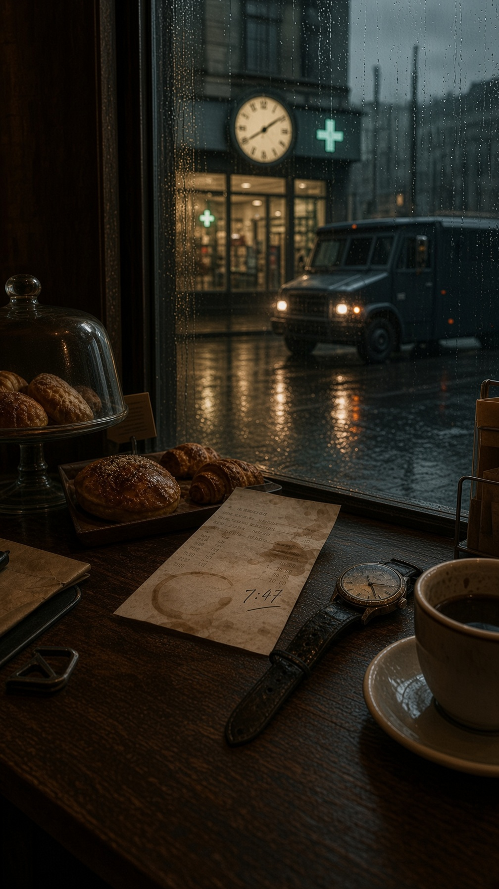

MOSAICO
Conectando à exibição pública…
CAMPO FECHADO

📓 Abertura da reunião
O áudio público será reproduzido somente neste telão.
🔊 Entendi · ativar som e iniciar
⏸ Pausar
↻ Reiniciar
Pular abertura